Pendidikan
Perbedaan Homeschooling dan Sekolah Formal untuk ABK
Perbedaan homeschooling dan sekolah formal untuk ABK mencakup pengelola, lingkungan, fleksibilitas, interaksi, dukungan, biaya, dan tanggung jawab.
Berbagi ilmu dan inspirasi tentang pendidikan inklusi, parenting, dan kajian islami
Perbedaan homeschooling dan sekolah formal untuk ABK mencakup pengelola, lingkungan, fleksibilitas, interaksi, dukungan, biaya, dan tanggung jawab.

Golongan disabilitas menurut UU 8/2016 meliputi fisik, intelektual, mental, sensorik, serta disabilitas ganda atau multi.

Gangguan perkembangan pervasif adalah istilah payung lama. Pahami pemetaannya ke spektrum autisme, batas istilah, evaluasi, dan dukungan aman.
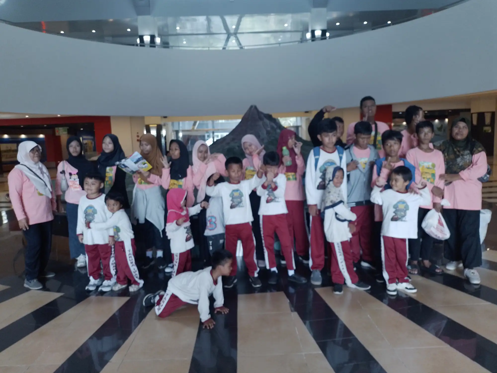
Hari Autis Sedunia perlu bergerak dari kesadaran menuju penerimaan, akses, partisipasi, dan penghormatan terhadap suara orang autistik.

Person centered planning disabilitas membantu anak dan keluarga menyusun tujuan berdasarkan pilihan, kekuatan, kebutuhan, dan kehidupan yang diinginkan.
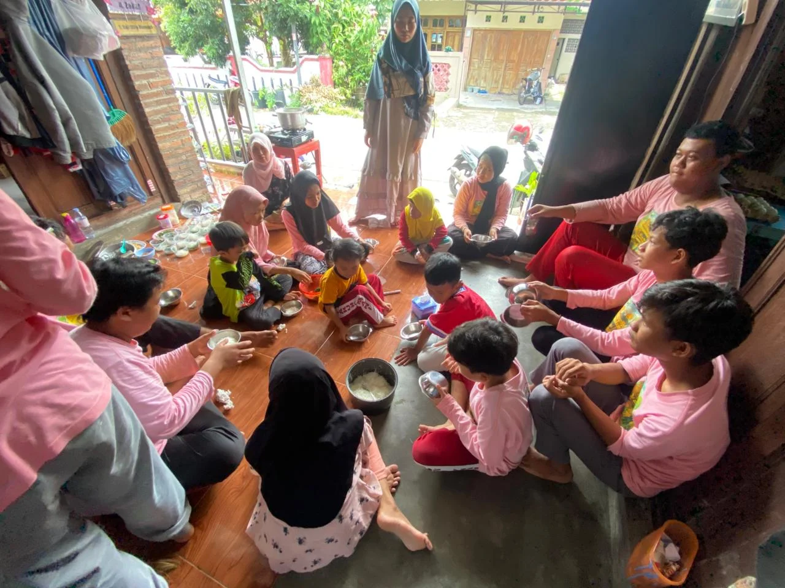
Sekolah SLB untuk anak apa? Kenali kebutuhan yang dilayani, beda SLB dan inklusi, asesmen, serta checklist memilih sekolah yang sesuai.
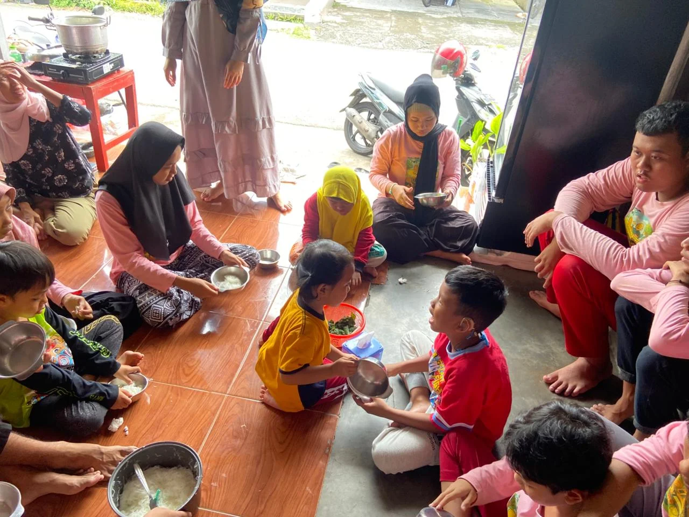
Stem cell therapy untuk autisme masih diteliti. Pahami status bukti, risiko, uji klinis, klaim yang perlu diwaspadai, dan pertanyaan untuk dokter.
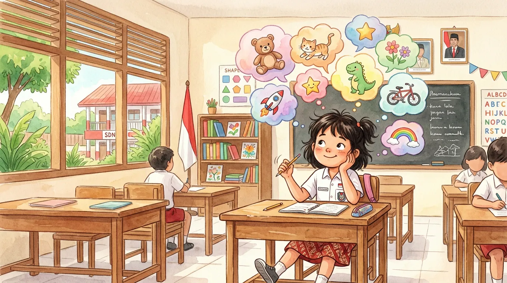
Hiperaktif artinya aktivitas dan impuls yang tinggi. Pelajari bedanya dengan ADHD, tanda yang perlu dievaluasi, dan dukungan aman untuk anak.
Kenali ciri-ciri ABK dari komunikasi, motorik, belajar, sensori, dan perilaku. Pelajari kapan perlu skrining serta langkah aman untuk mendukung anak Anda.
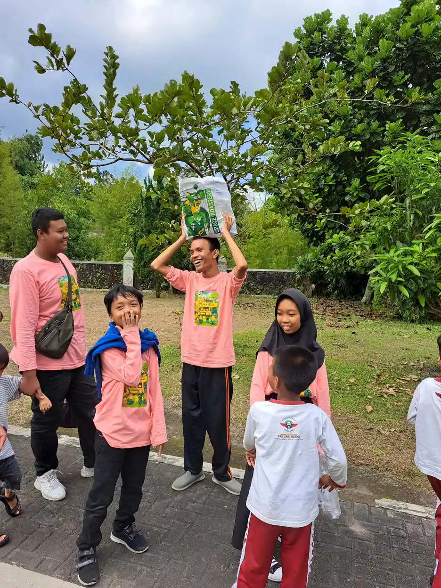
Artikel lengkap tentang perbedaan motorik kasar dan halus. Panduan komprehensif untuk orang tua, guru, dan pendamping anak berkebutuhan khusus.
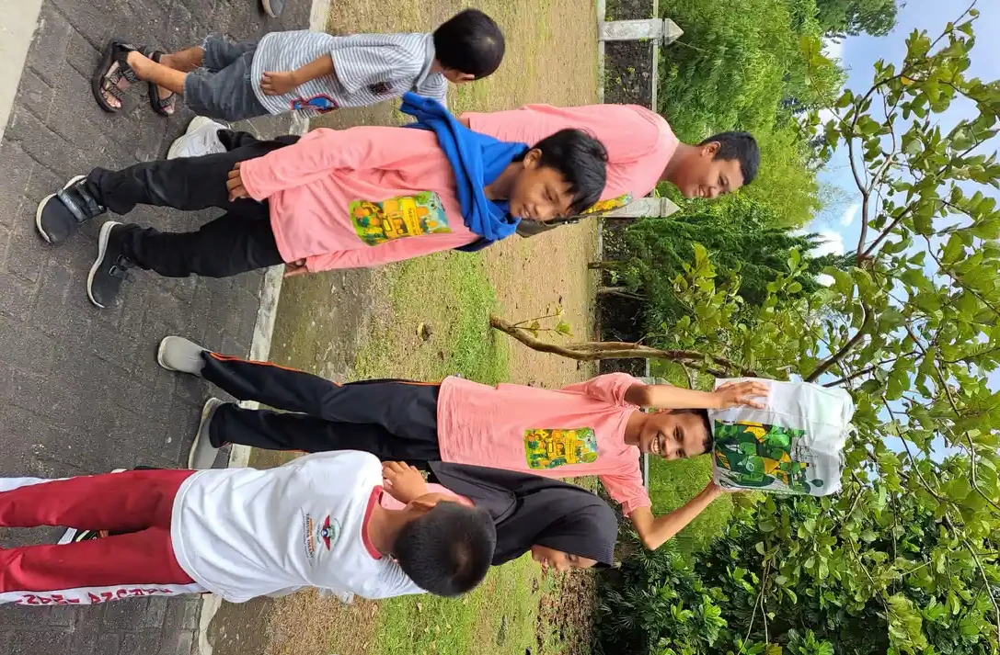
Artikel lengkap tentang contoh motorik kasar dan halus. Panduan komprehensif untuk orang tua, guru, dan pendamping anak berkebutuhan khusus.
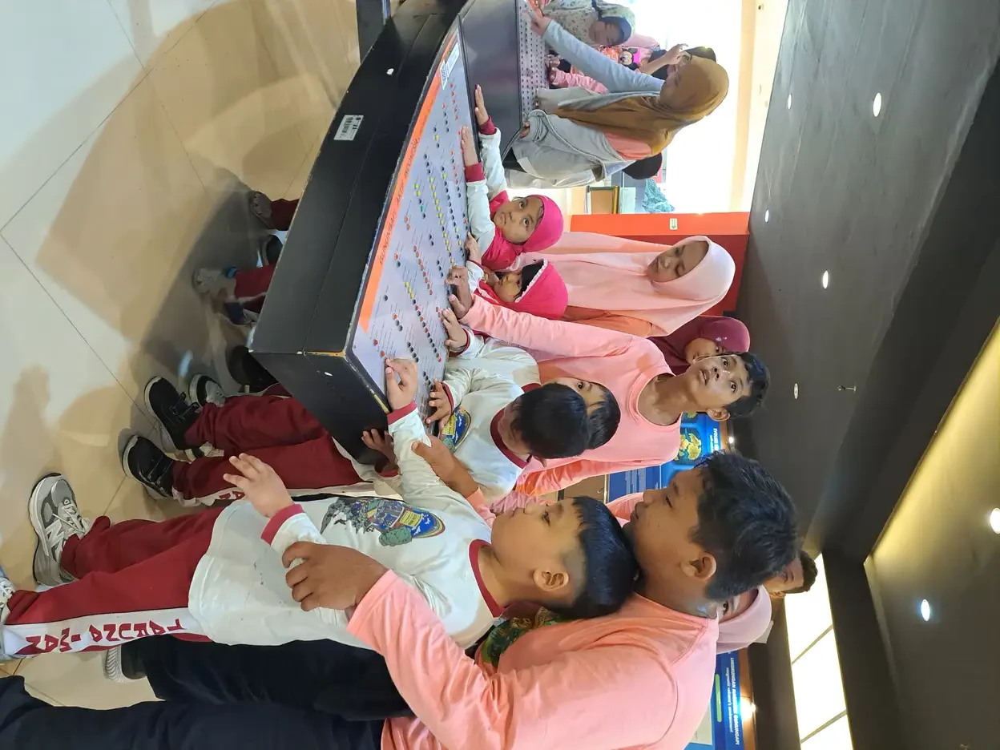
Artikel lengkap tentang mainan montessori. Panduan komprehensif untuk orang tua, guru, dan pendamping anak berkebutuhan khusus.
Artikel lengkap tentang belajar membaca ala montessori. Panduan komprehensif untuk orang tua, guru, dan pendamping anak berkebutuhan khusus.
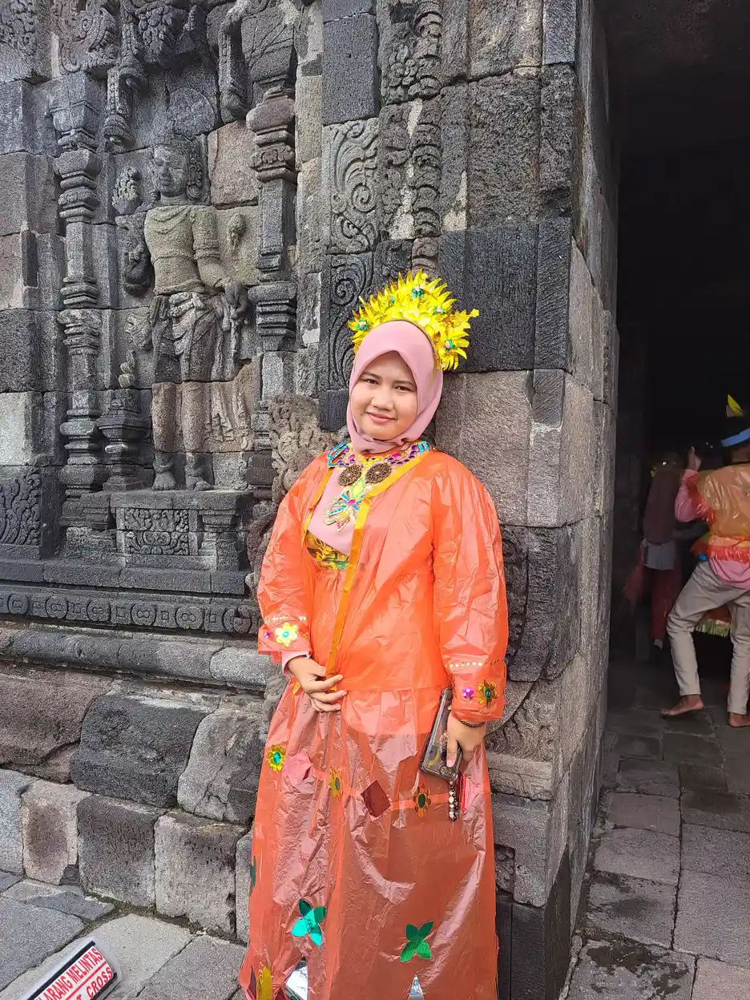
Artikel lengkap tentang metode montessori adalah. Panduan komprehensif untuk orang tua, guru, dan pendamping anak berkebutuhan khusus.

Artikel lengkap tentang kode icd 10 cerebral palsy. Panduan komprehensif untuk orang tua, guru, dan pendamping anak berkebutuhan khusus.
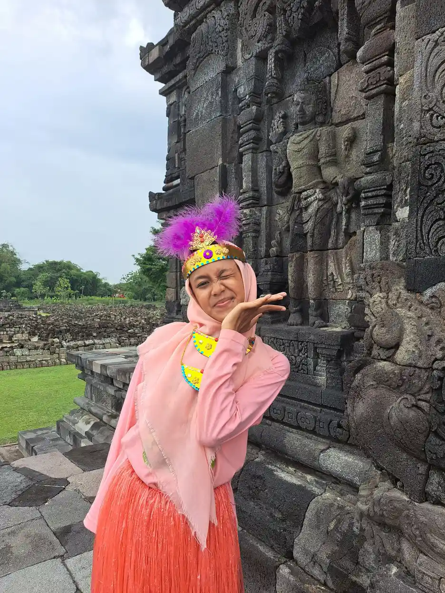
Artikel lengkap tentang motorik kasar contohnya. Panduan komprehensif untuk orang tua, guru, dan pendamping anak berkebutuhan khusus.
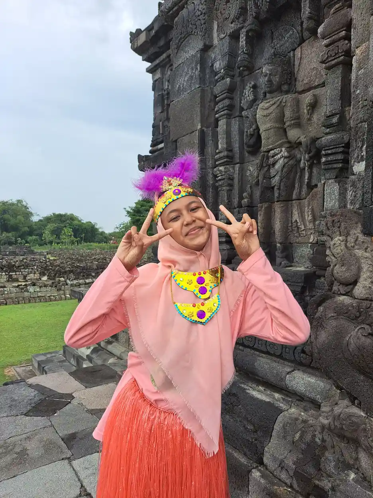
Artikel lengkap tentang motorik kasar dan halus. Panduan komprehensif untuk orang tua, guru, dan pendamping anak berkebutuhan khusus.
Panduan praktis menerapkan metode Montessori di rumah dan kelas anak berkebutuhan khusus: menyiapkan lingkungan, contoh aktivitas harian, dan adaptasinya.
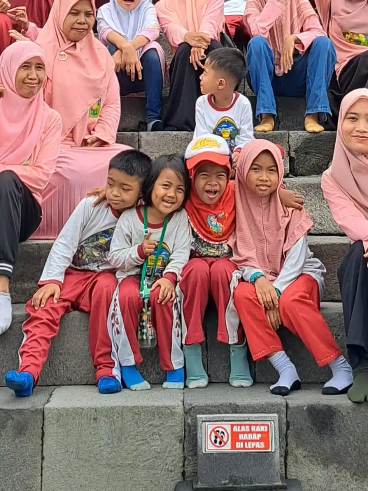
Kumpulan contoh motorik kasar: 30+ aktivitas praktis untuk bayi hingga anak 6 tahun, lengkap dengan adaptasi untuk anak berkebutuhan khusus di rumah.

Rincian biaya homeschooling di Indonesia 2026: jalur mandiri, komunitas, PKBM, dan lembaga premium, plus biaya ujian kesetaraan dan tips menghematnya.
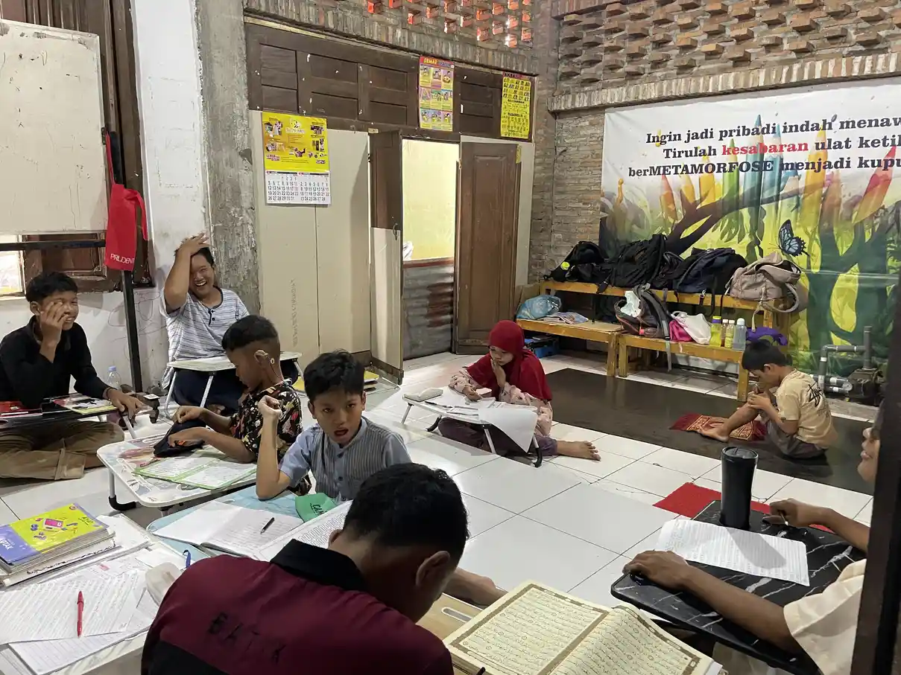
Diskalkulia adalah kesulitan belajar spesifik pada matematika. Kenali ciri-cirinya per usia, bedanya dengan malas berhitung, dan cara membantu anak.
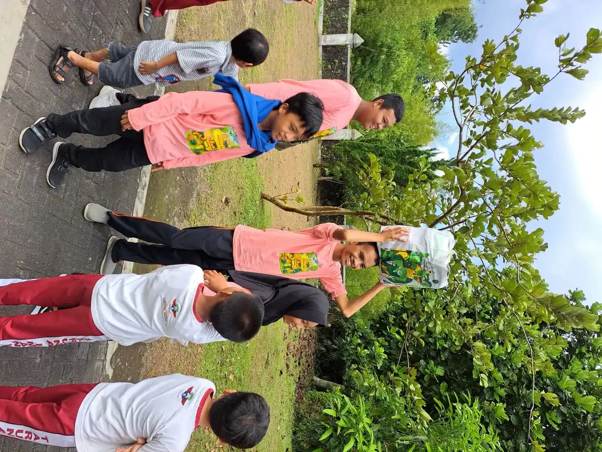
Panduan langkah demi langkah untuk orang tua anak hiperaktif: observasi, konsultasi profesional, rutinitas di rumah, dan kerja sama dengan sekolah.
Panduan disabilitas fisik pada anak untuk orang tua dan guru: jenis dan contohnya, penyebab, terapi, alat bantu mobilitas, serta dukungan di sekolah.
Kenali disabilitas sensorik pada anak: jenis gangguan penglihatan, pendengaran, dan wicara, tanda deteksi dini, alat bantu, serta dukungan keluarga.

Terapi bermain adalah metode terapi menggunakan permainan untuk membantu anak mengekspresikan emosi dan mengembangkan kemampuan. Pelajari jenis dan manfaatnya.
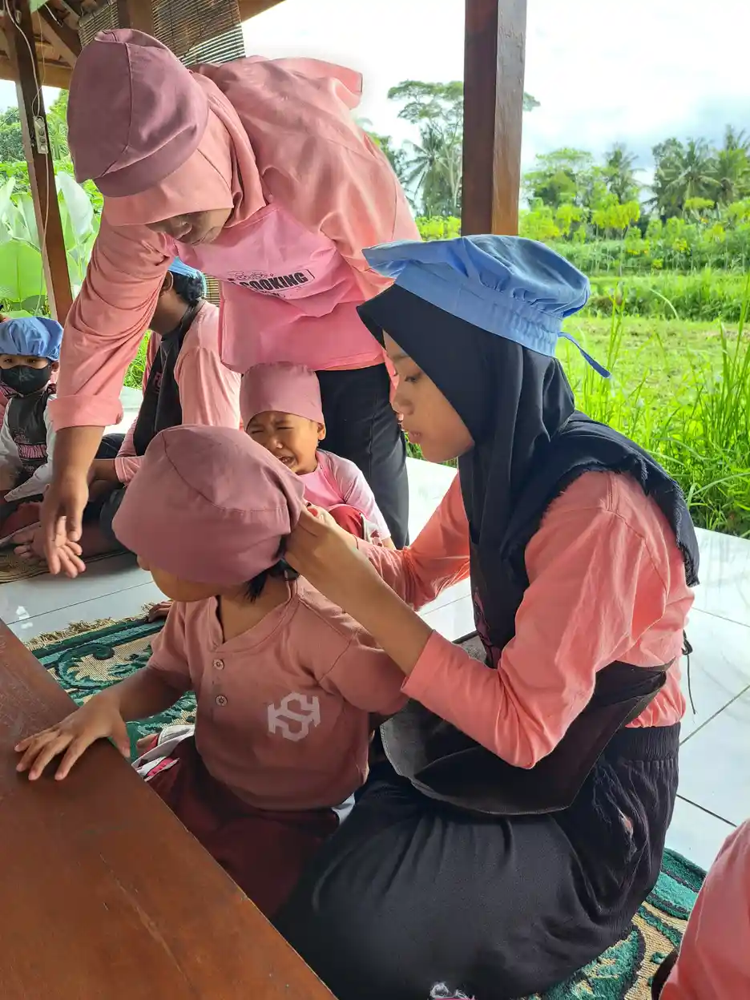
Cerebral palsy adalah gangguan gerak dan postur akibat kerusakan otak. Kenali jenis, penyebab, gejala, kode ICD-10, dan penanganan cerebral palsy pada anak.

Hiperaktif adalah kondisi anak yang sangat aktif berlebihan. Kenali ciri-ciri, penyebab, perbedaan dengan ADHD, dan cara menangani anak hiperaktif.
Panduan jadwal visual anak autis untuk orang tua dan guru: manfaat, cara membuat, contoh rutinitas harian, tips transisi, kesalahan umum, dan FAQ.

Montessori adalah metode pendidikan yang menghargai keunikan setiap anak. Pelajari pengertian, prinsip, dan penerapan metode Montessori untuk ABK.
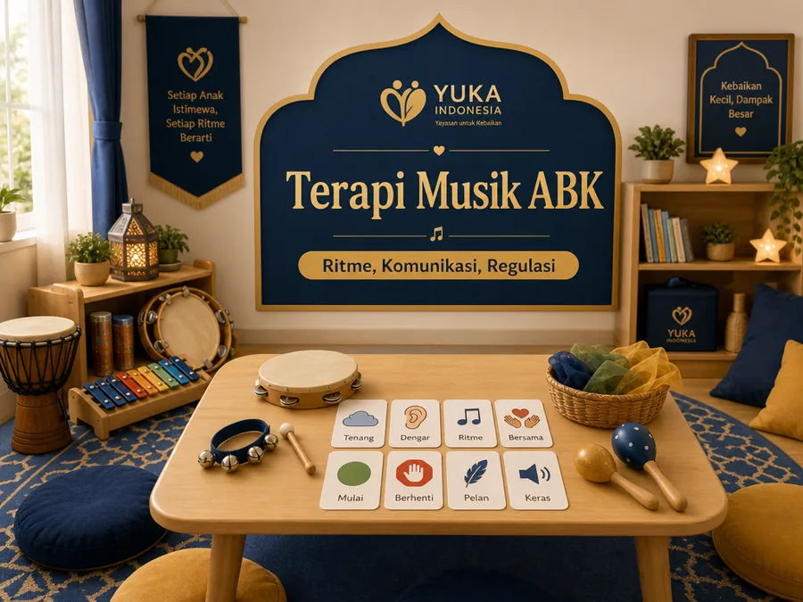
Panduan terapi musik anak berkebutuhan khusus untuk orang tua dan pendamping: manfaat, langkah, contoh aktivitas, batas aman, dan FAQ praktis.

Sensori integrasi adalah proses otak mengolah informasi dari panca indera. Pelajari gangguan sensori, piramida sensori integrasi, dan terapi untuk anak ABK.

Motorik halus adalah kemampuan gerakan otot kecil pada tangan dan jari. Pelajari tahapan perkembangan, latihan, dan cara stimulasi motorik halus anak.

Homeschooling adalah alternatif pendidikan untuk anak berkebutuhan khusus. Pelajari jenis, biaya, legalitas ijazah, dan tips menjalankan homeschooling ABK.
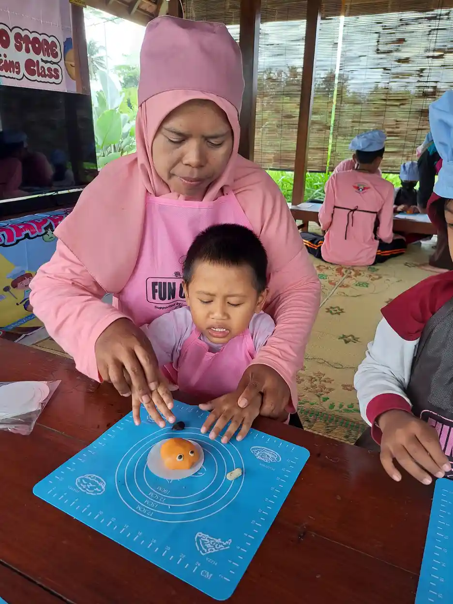
Speech delay adalah keterlambatan bicara pada anak yang perlu ditangani sejak dini. Kenali penyebab, tanda-tanda, dan cara menangani speech delay pada anak.

Tuna rungu adalah kondisi gangguan pendengaran sebagian atau total. Kenali penyebab, ciri-ciri, klasifikasi, dan cara berkomunikasi dengan tuna rungu.
Disabilitas adalah kondisi keterbatasan fisik, intelektual, mental, atau sensorik. Pelajari jenis-jenis disabilitas, hak hukum UU No. 8/2016, dan dukungan di Indonesia.
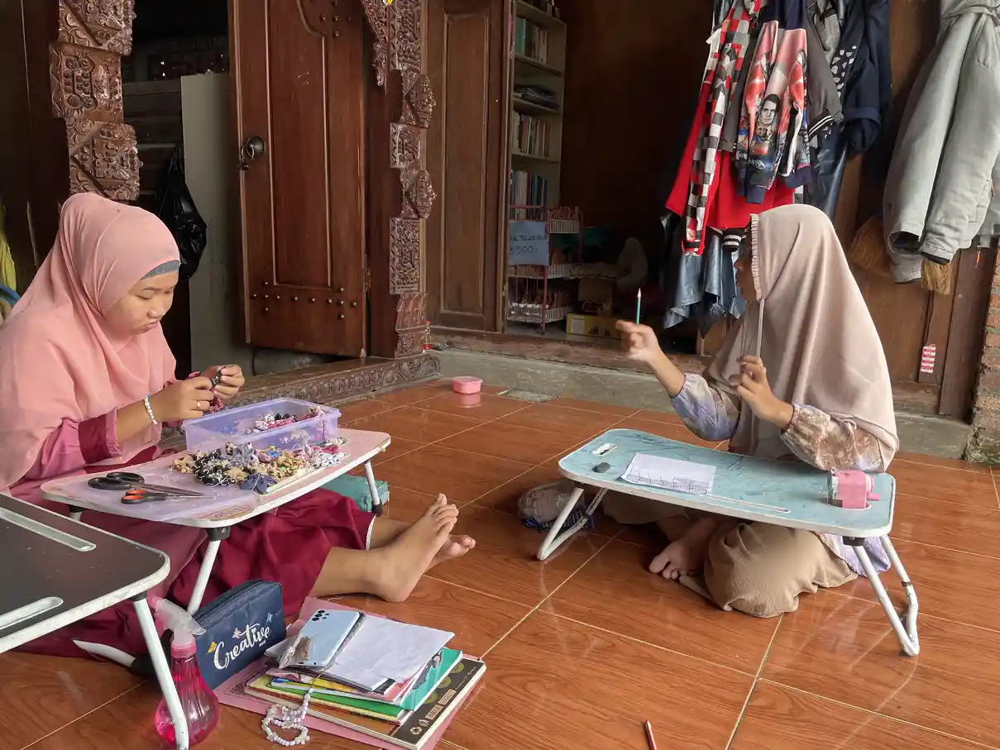
Asesmen ABK adalah proses penilaian untuk memahami kebutuhan anak berkebutuhan khusus. Pelajari jenis, tahapan, instrumen, dan pentingnya asesmen ABK.
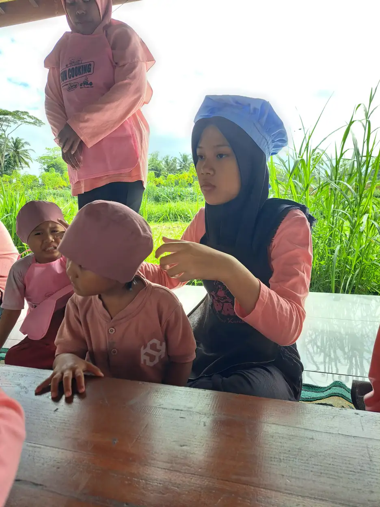
Terapi okupasi dan terapi wicara punya fokus berbeda. Pelajari kapan anak membutuhkan OT, speech therapy, atau kombinasi keduanya.
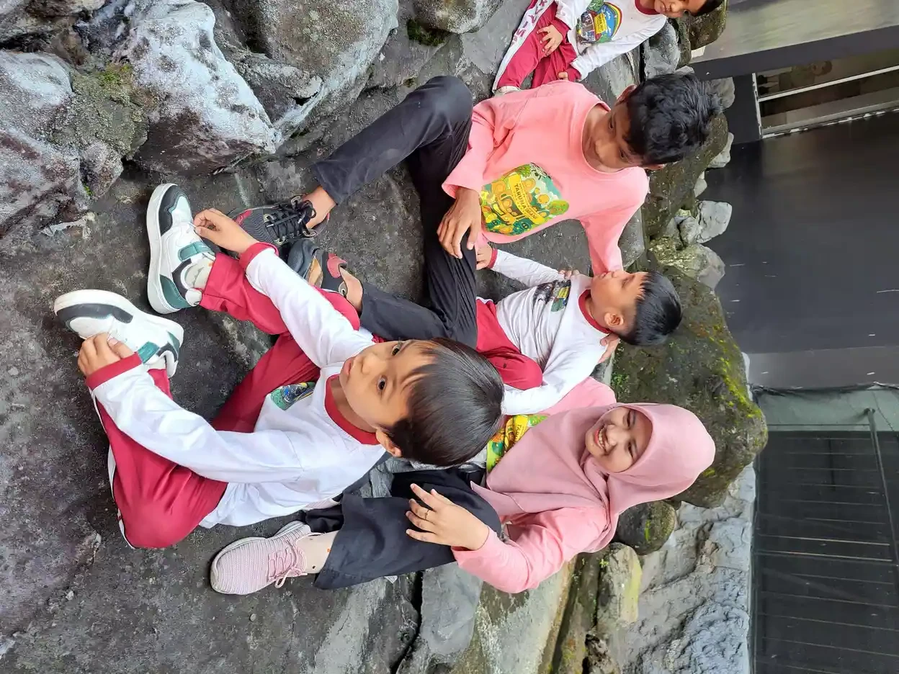
Terapi fisik untuk ABK membantu kekuatan, keseimbangan, postur, dan gerak anak. Kenali manfaat, tanda kebutuhan, dan contoh dukungannya.
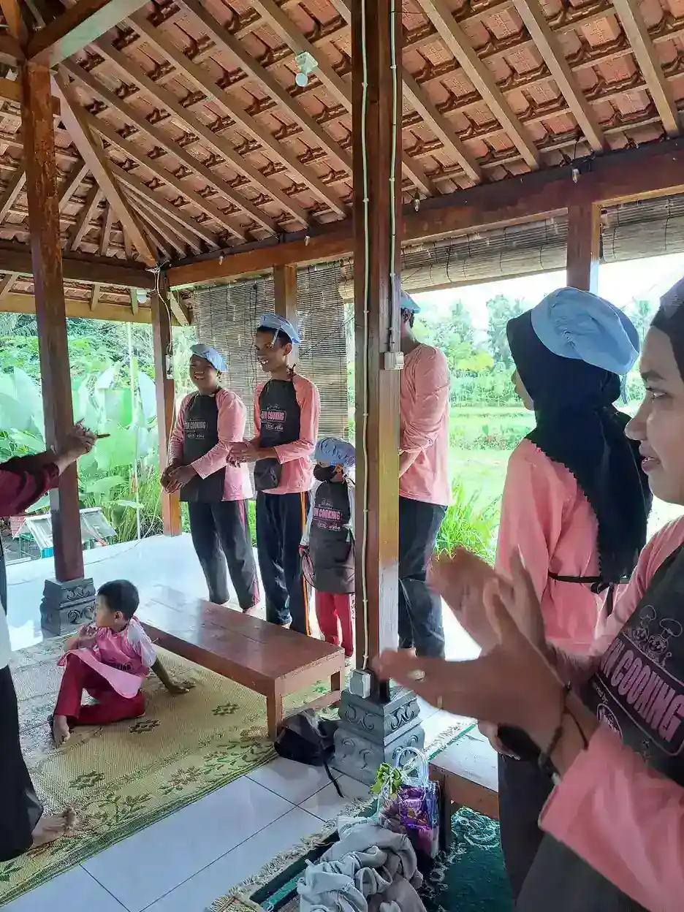
Daftar panti asuhan dan yayasan disabilitas di Yogyakarta lengkap dengan alamat dan cara membantu. Termasuk YUKA, yayasan untuk anak berkebutuhan khusus.

Apa perbedaan autis dan ADHD? Pelajari gejala, cara diagnosis, dan penanganan yang tepat. Termasuk penjelasan autis berat dan komorbiditas autis-ADHD.
Pendidikan khusus adalah layanan pendidikan untuk anak berkebutuhan khusus. Pelajari jenis, kurikulum, dan cara menyusun Program Pembelajaran Individual (PPI).

Terapi ABA (Applied Behavior Analysis) adalah metode terapi berbasis bukti untuk anak autis. Pelajari prinsip, teknik, manfaat, dan perbandingan dengan floor time.
Slow learner adalah anak dengan kemampuan belajar di bawah rata-rata (IQ 70-90). Kenali ciri-ciri, penyebab, dan cara mengajar anak lambat belajar secara efektif.

GPK adalah Guru Pembimbing Khusus yang bertugas mendampingi ABK di sekolah inklusi. Pelajari peran, tugas, kualifikasi, dan perbedaan GPK dengan shadow teacher.

Inklusi sosial adalah prinsip yang memastikan setiap individu berpartisipasi penuh dalam masyarakat. Pelajari pengertian, prinsip, dan penerapan inklusi di Indonesia.
Penyandang disabilitas di Indonesia dilindungi UU No. 8 Tahun 2016. Pelajari hak-hak, cara membuat kartu disabilitas, dan program dukungan yang tersedia.
Kecerdasan majemuk adalah teori Howard Gardner tentang 9 jenis kecerdasan manusia. Kenali jenis-jenis kecerdasan anak dan cara mengembangkannya secara optimal.
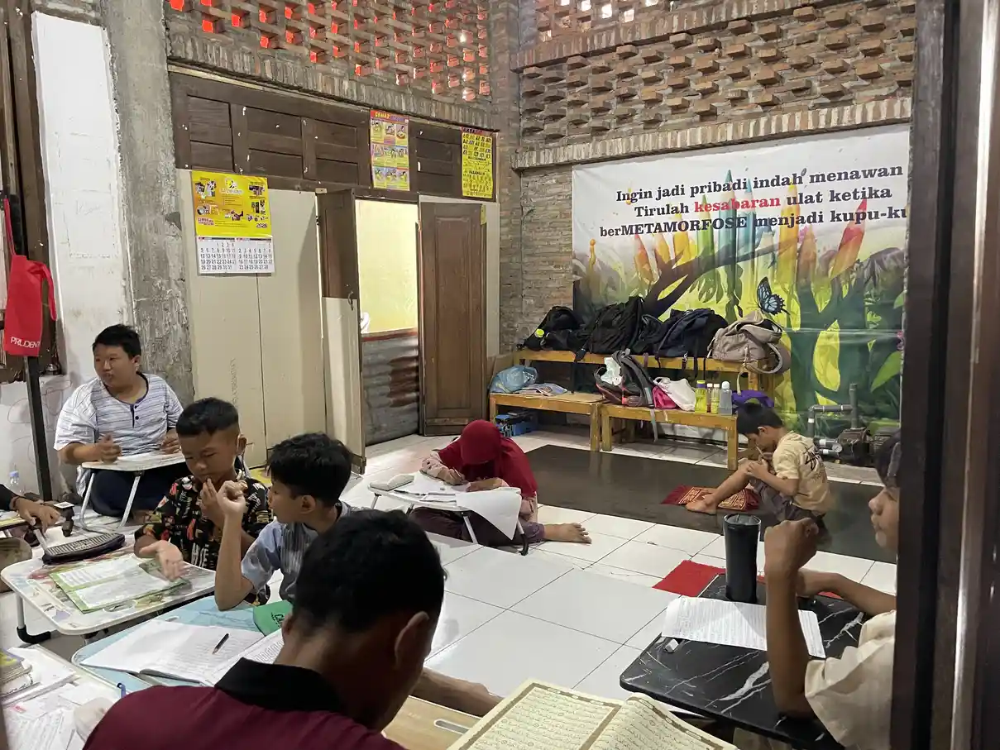
Shadow teacher adalah guru pendamping khusus untuk anak berkebutuhan khusus di sekolah. Pelajari peran, tugas, kualifikasi, dan cara menjadi shadow teacher.
Terapi wicara adalah terapi untuk mengatasi gangguan bicara dan bahasa pada anak. Pelajari manfaat, proses, biaya, dan kapan anak membutuhkan terapi wicara.
SLB adalah Sekolah Luar Biasa untuk anak berkebutuhan khusus. Pelajari jenis SLB (A-G), kurikulum, dan daftar SLB terdekat di Yogyakarta lengkap dengan alamat.
Tuna wicara adalah kondisi gangguan bicara dan komunikasi. Kenali penyebab, ciri-ciri, dan cara berkomunikasi dengan penyandang tuna wicara secara efektif.
Terapi okupasi adalah terapi yang membantu anak berkebutuhan khusus mengembangkan kemandirian. Pelajari manfaat, proses, dan biaya terapi okupasi untuk ABK.
Tuna daksa adalah kondisi disabilitas fisik yang memengaruhi fungsi tubuh. Kenali jenis, penyebab, hak hukum, dan cara mendukung penyandang tuna daksa.
Bahasa isyarat adalah sistem komunikasi visual menggunakan gerakan tangan. Pelajari jenis bahasa isyarat Indonesia (BISINDO & SIBI) dan cara belajarnya.
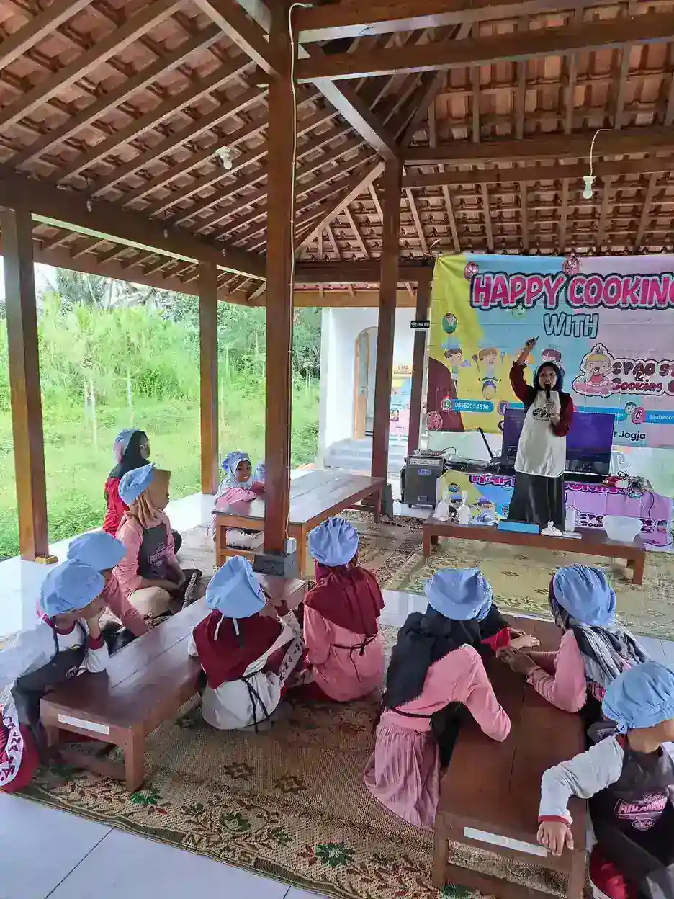
Down syndrome adalah kondisi genetik akibat kelebihan kromosom 21. Kenali ciri-ciri, penyebab, dan cara mendukung tumbuh kembang anak down syndrome.
Tunagrahita adalah kondisi disabilitas intelektual. Kenali klasifikasi, ciri-ciri, dan metode pendidikan yang tepat untuk anak tunagrahita agar berkembang optimal.
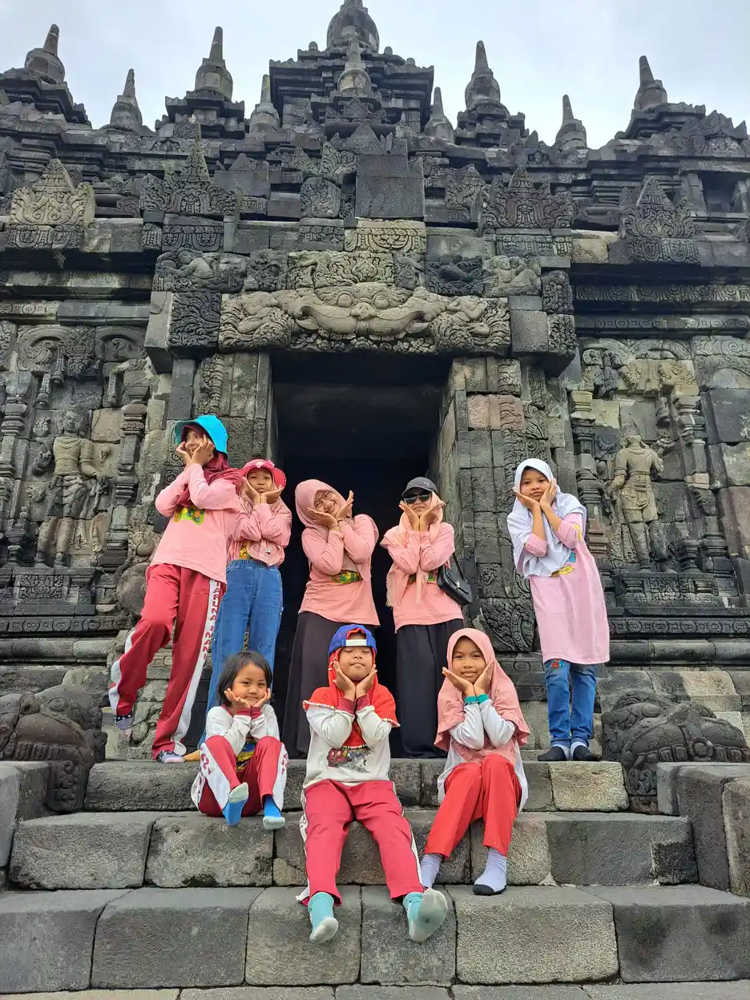
Tunaganda adalah kondisi anak dengan dua atau lebih disabilitas. Kenali ciri-ciri, penyebab, metode pendidikan, dan program intervensi untuk anak tunaganda.
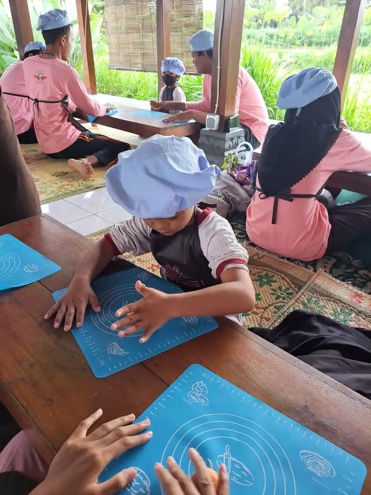
Kesulitan belajar pada anak meliputi disleksia, diskalkulia, dan disgrafia. Kenali jenis, penyebab, tanda-tanda, dan cara mengatasi kesulitan belajar.
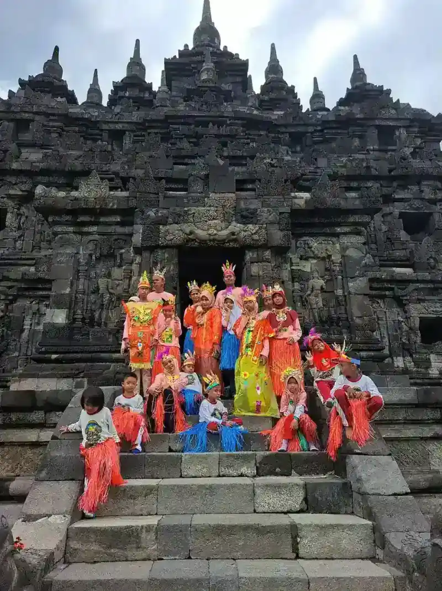
Retardasi mental adalah istilah klinis untuk disabilitas intelektual. Kenali penyebab, klasifikasi, ciri-ciri, dan cara penanganan yang tepat untuk anak.

Tunalaras adalah gangguan emosi dan perilaku pada anak. Kenali ciri-ciri, penyebab, klasifikasi, dan cara penanganan anak tunalaras yang tepat.
Difabel adalah istilah untuk penyandang disabilitas. Pelajari pengertian, jenis-jenis, hak hukum, dan cara mendukung difabel di Indonesia secara inklusif.
Disleksia adalah gangguan belajar yang memengaruhi kemampuan membaca. Kenali ciri-ciri, penyebab, dan cara membantu anak disleksia belajar dengan efektif.
Autisme adalah gangguan perkembangan neurologis. Pelajari ciri-ciri autisme, penyebab, cara diagnosis, dan penanganan anak autis berdasarkan pengalaman YUKA.
Panduan lengkap ADHD pada anak: pengertian, gejala, penyebab, diagnosis, dan cara menangani. Dilengkapi pengalaman pendampingan ABK di YUKA Yogyakarta.
Panduan lengkap memahami anak berkebutuhan khusus (ABK): pengertian menurut UU, 9 jenis ABK, ciri-ciri, hak pendidikan, dan cara mendukung tumbuh kembang mereka.

Wisata edukasi memberikan manfaat luar biasa bagi ABK. Simak pengalaman YUKA ke Candi Plaosan dan Museum Gunung Merapi beserta tips praktisnya.

Terapi memasak terbukti meningkatkan motorik, sensorik, dan kepercayaan diri ABK. Pelajari cara YUKA menerapkannya beserta panduan untuk orang tua.
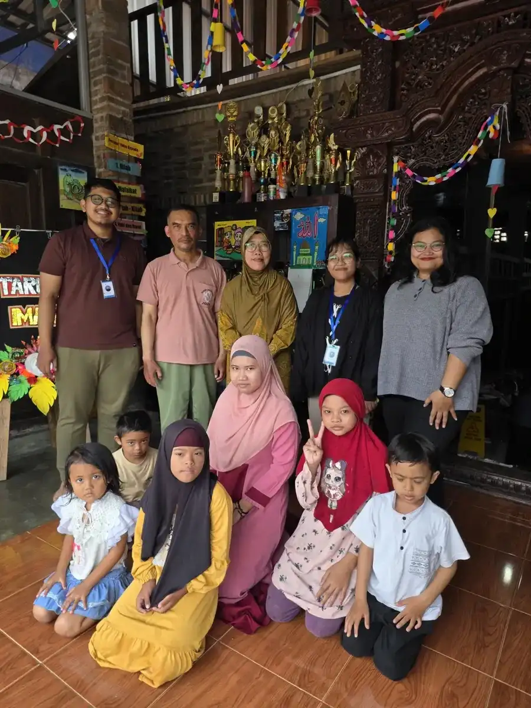
Orang tua adalah kunci keberhasilan pendidikan inklusi. Pelajari cara efektif mendampingi ABK di rumah dan berkolaborasi dengan sekolah.
Kisah inspiratif Mas Ilham, individu berkebutuhan khusus autis berusia 25 tahun yang hafal Al-Quran dan mandiri lewat produksi telur asin.
YUKA menyambut Ramadhan 2026 dengan 5 program besar: renovasi sekolah, panti asuhan, rekruitmen guru, pendidikan diniyah, dan bisnis sosial.
Pahami peran vital yayasan sosial dalam memberikan pendidikan, terapi, dan dukungan bagi anak berkebutuhan khusus di Indonesia.
Kriteria penting, pertanyaan yang harus diajukan, dan red flag yang perlu diwaspadai saat memilih yayasan untuk anak ABK.
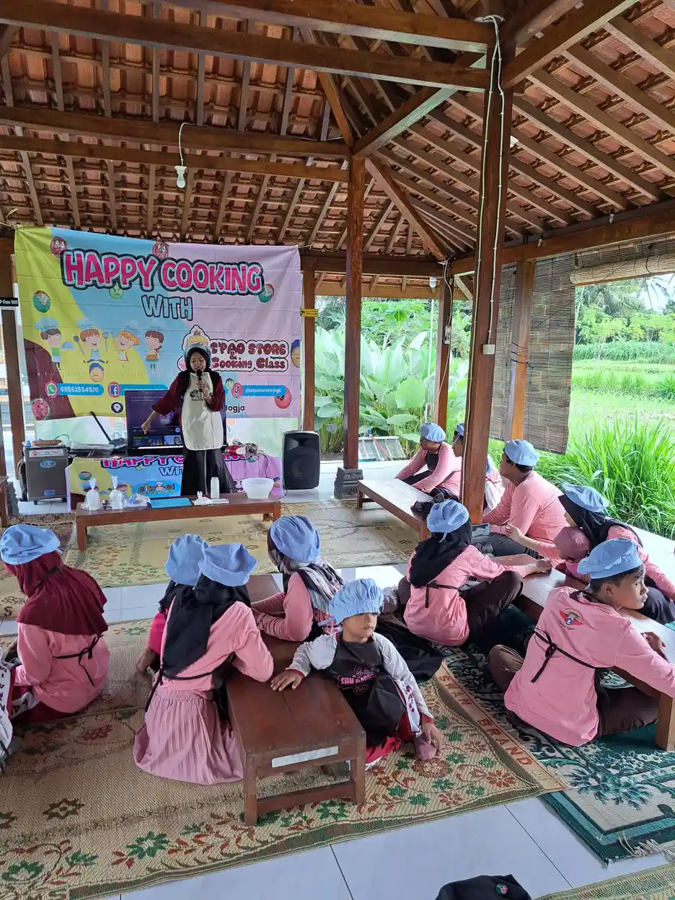
Panduan komprehensif program pemberdayaan ABK mulai dari intervensi dini, pendidikan, keterampilan hidup, hingga transisi ke dunia kerja.

Pendidikan inklusi adalah sistem pendidikan yang memberikan kesempatan kepada semua anak untuk belajar bersama, terlepas dari perbedaan kemampuan.

Mendampingi anak autis membutuhkan kesabaran dan pendekatan khusus. Berikut tips yang bisa diterapkan orang tua.

Islam sangat memuliakan orang yang merawat anak yatim. Rasulullah SAW bersabda tentang kedudukan mulia bagi penyantun yatim.
Era kecerdasan buatan membawa tantangan dan peluang baru. Bagaimana kita mempersiapkan anak-anak ABK untuk masa depan?

Ilham membuktikan bahwa keterbatasan bukan penghalang untuk meraih prestasi. Kini ia hafal 30 juz dan mandiri berwirausaha.

YUKA berkomitmen untuk transparansi dalam pengelolaan donasi. Berikut laporan penggunaan dana periode terbaru.
Asesmen ABK adalah proses evaluasi komprehensif untuk mengetahui kebutuhan, potensi, dan hambatan anak berkebutuhan khusus dalam belajar.
Bahasa isyarat adalah sistem komunikasi visual yang digunakan oleh komunitas tuli. Pelajari jenis dan cara mempelajari BISINDO di Indonesia.
BISINDO (Bahasa Isyarat Indonesia) adalah sistem komunikasi yang berkembang alami dari komunitas tuli Indonesia. Pelajari sejarah dan perbedaannya dengan SIBI.
Cerebral palsy adalah gangguan gerakan dan postur yang disebabkan oleh kerusakan otak. Pelajari jenis, penyebab, dan cara penanganan pada anak.
Program CSR pendidikan membantu perusahaan berkontribusi pada pendidikan ABK. Pelajari manfaat dan cara memulai program CSR yang berdampak.
Disabilitas adalah kondisi yang membatasi kemampuan seseorang dalam beraktivitas. Pelajari jenis, hak hukum, dan dukungan yang tersedia di Indonesia.
Disabilitas intelektual ditandai dengan keterbatasan fungsi intelektual dan perilaku adaptif. Pelajari penyebab, klasifikasi, dan cara penanganannya.
Panduan donasi online untuk mendukung pendidikan anak berkebutuhan khusus. Pelajari cara berdonasi, program CSR, dan penyaluran zakat untuk ABK.
Floor time atau DIR Floortime adalah metode terapi berbasis hubungan yang membantu anak autis berkembang melalui interaksi bermain yang dipimpin anak.
GPK (Guru Pembimbing Khusus) adalah tenaga pendidik yang membantu ABK belajar di sekolah inklusi. Pelajari peran, tugas, dan kualifikasi GPK.
Hiperaktif adalah kondisi yang ditandai dengan aktivitas berlebihan, kesulitan fokus, dan impulsivitas. Pelajari ciri-ciri, penyebab, dan cara menanganinya.
Homeschooling bisa menjadi alternatif pendidikan yang efektif untuk ABK. Pelajari panduan lengkap, biaya, dan aspek legalitasnya di Indonesia.
Inklusi sosial adalah upaya untuk memastikan semua individu, termasuk penyandang disabilitas, dapat berpartisipasi penuh dalam masyarakat.
Intervensi dini pada usia golden age 0-6 tahun sangat penting bagi ABK. Pelajari panduan lengkap program intervensi dini yang efektif.
Teori kecerdasan majemuk Howard Gardner menjelaskan bahwa manusia memiliki 9 jenis kecerdasan berbeda. Pelajari penerapannya dalam pendidikan ABK.
Latihan motorik halus membantu ABK mengembangkan koordinasi tangan dan mata. Temukan 25+ aktivitas yang bisa dilakukan di rumah.
Metode Montessori menekankan kemandirian dan pembelajaran berbasis sensorik. Pelajari bagaimana metode ini dapat diterapkan untuk anak berkebutuhan khusus.
Motorik halus mencakup gerakan kecil yang melibatkan jari tangan dan koordinasi mata. Pelajari tahapan perkembangan dan cara stimulasi yang tepat.
Motorik kasar melibatkan gerakan otot besar seperti berjalan dan melompat. Pelajari contoh, tahapan perkembangan, dan cara stimulasi motorik kasar anak.
Daftar lengkap panti asuhan dan yayasan yang mendukung penyandang disabilitas di Yogyakarta, beserta cara membantu dan berkontribusi.
Pendidikan khusus dirancang untuk memenuhi kebutuhan unik ABK. Pelajari jenis layanan, jenis sekolah, dan Program Pembelajaran Individual (PPI).
Penyandang disabilitas memiliki hak yang dilindungi undang-undang. Pelajari hak-hak mereka, cara mendapatkan kartu disabilitas, dan dukungan yang tersedia.
Autisme dan ADHD sering terlihat mirip namun memiliki perbedaan mendasar. Pelajari gejala, diagnosis, dan penanganan yang tepat untuk masing-masing kondisi.
Program Pembelajaran Individual adalah rencana pendidikan yang disesuaikan khusus untuk setiap ABK. Pelajari komponen dan cara menyusun PPI yang efektif.
Gangguan sensori integrasi mempengaruhi kemampuan otak memproses informasi indera. Pelajari tanda-tanda gangguan dan terapi yang efektif untuk ABK.
Shadow teacher adalah pendamping khusus yang membantu ABK mengikuti pembelajaran di kelas reguler. Pelajari peran, tugas, dan cara menjadi shadow teacher.
SLB (Sekolah Luar Biasa) adalah lembaga pendidikan khusus untuk ABK. Pelajari jenis SLB, kurikulum yang digunakan, dan daftar SLB di Yogyakarta.
Panduan mencari SLB terdekat di Yogyakarta dan sekitarnya. Temukan daftar lengkap sekolah luar biasa dengan alamat, kontak, dan jenis layanan.
Slow learner adalah anak yang memiliki kemampuan belajar di bawah rata-rata namun tidak termasuk tunagrahita. Pelajari ciri-ciri dan strategi mengajar yang efektif.
Speech delay atau keterlambatan bicara pada anak perlu ditangani sedini mungkin. Pelajari penyebab, tanda-tanda, dan cara penanganan yang tepat.
Terapi ABA (Applied Behavior Analysis) adalah salah satu terapi paling efektif untuk anak autis. Pelajari metode, manfaat, dan cara penerapannya.
Terapi bermain memanfaatkan aktivitas bermain untuk membantu ABK mengembangkan keterampilan sosial, emosional, dan kognitif secara menyenangkan.
Terapi okupasi membantu ABK mengembangkan kemampuan untuk melakukan aktivitas sehari-hari secara mandiri. Pelajari manfaat dan prosesnya.
Terapi wicara membantu ABK mengembangkan kemampuan komunikasi verbal dan non-verbal. Pelajari jenis, manfaat, dan proses terapi wicara.
Panduan menemukan terapis speech delay yang tepat untuk anak Anda. Pelajari cara memilih terapis, estimasi biaya, dan apa yang diharapkan dari terapi.
Tuna daksa adalah istilah untuk individu dengan keterbatasan fisik atau motorik. Pelajari pengertian, jenis, dan bentuk dukungan yang diperlukan.
Tuna rungu adalah kondisi kehilangan pendengaran sebagian atau seluruhnya. Pelajari jenis, penyebab, dan cara berkomunikasi dengan penyandang tuna rungu.
Tuna wicara adalah kondisi ketidakmampuan bicara yang mempengaruhi komunikasi. Pelajari penyebab, jenis, dan cara mendukung penyandang tuna wicara.
Artikel tidak ditemukan
Coba kata kunci lain atau pilih kategori berbeda.
Ikuti perkembangan YUKA dan dapatkan artikel inspiratif langsung di WhatsApp Anda.
Gabung WhatsApp Channel